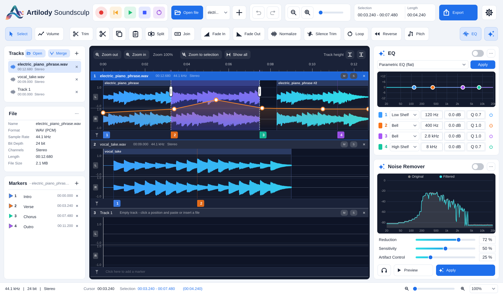
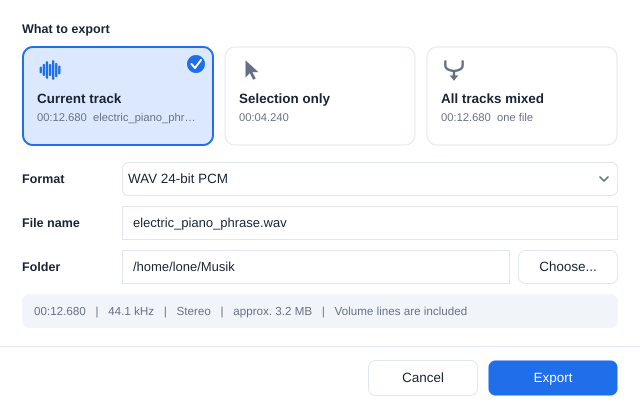

Artilody Soundsculp is a program for editing and combining several audio tracks. Every audio file you open becomes a track. All tracks are shown below each other on a shared timeline and play together. The audio on a track lives in clips, which can be split, moved around – also to other tracks – and joined again, much like in Audacity.
Features: trim, cut/copy/paste, split and join clips, fade in and out, normalize, silence trim, loop, reverse, pitch shifting without changing the speed, a parametric EQ, a noise remover, a volume line on every track, coloured markers, recording from a microphone, merging tracks, and export to WAV, AIFF, FLAC and Ogg Vorbis.
The program is in English. A Danish interface can be chosen under Settings (gear) → Language (requires a restart).
Every change can be undone. The original file is never modified – the result is only written when you export.
Download the installer from the Releases page at github.com/shenphenchoedron-hue/Artilody-Soundsculp.
ArtilodySoundsculp-1.1.3-Windows-Setup.exe and double-click it.A Portable zip is also available – unpack it and run the program without installing.
ArtilodySoundsculp-1.1.3-macOS-Universal.dmg, open it and drag the program to Applications.xattr -dr com.apple.quarantine "/Applications/Artilody Soundsculp.app"Download the .deb file for your system and install it, for example:
sudo apt install ./artilody-soundsculp_1.1.3_debian-12_amd64.deb
The program is in the application menu under Sound & Video, or start it with artilody-soundsculp.
The package is self-contained – everything the program needs is included, nothing else has to be downloaded. Uninstall with sudo apt remove artilody-soundsculp.

| Area | Description |
|---|---|
| Top bar | Logo, transport buttons (record, go to start, play, stop, loop), Open file, track selector, + (tracks menu), undo/redo, zoom, selection and length, Export and Settings (gear). |
| Toolbar | Select, Volume, Trim, Cut, Copy, Paste, Split, Join, Fade In, Fade Out, Normalize, Silence Trim, Loop, Reverse, Pitch. On the right: show/hide the EQ and the Noise Remover. |
| Tracks (left) | The list of tracks with the buttons Open, Merge and +. |
| File (left) | Information about the selected track. |
| Markers (left) | The markers of the selected track. This is where you type their text and choose colours. |
| Tracks area (centre) | Zoom bar, shared time ruler and all tracks below each other. Each track has a header (number, name, M, S, ×), clips with a name bar, an orange volume line and a marker line at the bottom. |
| EQ and Noise Remover (right) | Parametric EQ and noise remover. |
| Status bar | Format, cursor position, selection, messages and zoom. |
Click Open file in the top bar or Open above the track list (Ctrl+O). You can select several files at once or drag files into the window. Each file becomes a new track at the bottom. Formats: WAV, AIFF, FLAC, Ogg Vorbis and MP3 on all systems; on macOS also M4A/AAC and CAF. Opus files cannot be opened.
Click a track to select it (its header turns blue). Editing, effects and markers work on the selected track. Double-click the header to rename the track, click × to close it.
+ → New empty track (Ctrl+N) creates an empty track. Click a position on it and:
Different sample rates or channel counts are converted automatically.
Click Merge above the track list (or + → Merge tracks into one track…). Tick the tracks to include and press Merge. The tracks are mixed into a new track called "Merged track". Volume lines are included and become part of the audio, so the new track starts with a flat volume line. Markers are copied. If the mix gets too loud, the level is reduced automatically. Optionally tick Close the merged tracks afterwards.
The audio on a track lives in clips. Each clip has a dark-blue name bar at the top. Between clips there can be empty gaps (darker area), which play as silence.
Paste (Ctrl+V) inserts a new clip at the cursor. If the cursor is inside a clip, the clip is split and the rest is pushed to the right. In a gap, later audio is only pushed if there is not enough room. If there is a selection, it is replaced.
Effects work on the selection – or on the whole track if nothing is selected. They work on all clips inside the selection.
| Button | Function |
|---|---|
| Trim (Ctrl+T) | Keeps only the selection. It stays where it is (like Audacity). |
| Cut / Copy / Paste | Cut (leaves a gap), copy, paste as a new clip. Also works between tracks. |
| Split / Join | Split and join clips (see section 5). |
| Fade In / Fade Out | Smooth fade over the selection (without a selection: the first/last 3 seconds). Follows time, so it is smooth across several clips. |
| Normalize | Raises/lowers the level so the loudest peak is at −0.1 dB. |
| Silence Trim | Removes silence at the start and end of each clip. Threshold in dB (default −50). |
| Loop | Repeats the selection a number of times; later audio is pushed to the right. |
| Reverse | Reverses the audio. |
| Pitch | Changes the pitch without changing the speed (section 8). |
Click Pitch and choose between −12 and +12 semitones. Preview listens (up to 10 s), Apply keeps the change. Length and tempo are preserved.
4 bands with type (Low Shelf, Bell, High Shelf, Low Cut, High Cut, Notch), frequency, gain, Q and on/off.
Each track has an orange volume line that controls the level over time without changing the audio itself. It is used for playback, merging and export.
Each track has its own markers with its own numbering (marker 1 on one track has nothing to do with marker 1 on another).
| Button | Function |
|---|---|
| ● Record (R) | Records onto a new track. Lights up red while recording. Press again or Stop to finish. |
| |◀ Go to start (Home) | Moves the cursor to the start. |
| ▶ Play (Space) | Plays all tracks together from the cursor. Lights up green. |
| ■ Stop | Stops playback or recording. |
| ⟳ Loop (L) | Repeats the selection (or everything) during playback. |
Each track header has M (mute – silences the track, which is dimmed) and S (solo – hear only the solo tracks). Audio devices are chosen under Settings → Audio settings….

Click Export (Ctrl+E). In the window you choose:
The info line shows length, sample rate, stereo/mono and the approximate file size. Volume lines are always included. The program remembers the last format and folder. If the file exists, you are asked before it is replaced.
| Key | Function | Key | Function |
|---|---|---|---|
| Space | Play / stop | Ctrl+X/C/V | Cut / copy / paste |
| R | Record | Delete | Delete (leave gap) |
| Home | Go to start | Shift+Delete | Delete and close gap |
| L | Loop on/off | Ctrl+I / Ctrl+J | Split / join clips |
| M | New marker | Ctrl+T | Trim |
| Ctrl+A | Select all | Ctrl+Z / Ctrl+Y | Undo / redo |
| + / − / 0 | Zoom in / out / show all | Ctrl+O / N / E | Open / new track / export |
On a Mac use Cmd instead of Ctrl.
xattr -cr "/Applications/Artilody Soundsculp.app" in Terminal.Report bugs and wishes on GitHub under Issues. Artilody Soundsculp is free software under the GPL-3.0 and is built with JUCE.